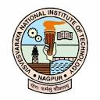

Prof. Arvind Kumar
Department of Electronics & Communication Engineering
Antennas, EMI/EMC measurement and testing, microwave and millimeter-wave integrated circuits.
Education Ph.D. RF and Microwave, National Institute of Technology Trichy (2019); M.Tech. Electronics, Pondicherry Central University (2015); B.Tech. Electronics and Communication Engineering, Govt. Engineering College Ajmer (2012).
Research Substrate integrated waveguide antennas, IoT and military antennas, millimeter-wave and THz technologies, microwave integrated circuits, and communication systems.